Soltá acá el XML de tu línea de tiempo
En Premiere: Archivo › Exportar › Final Cut Pro XML. Una pista por cámara o grabador, con los clips sin ordenar.

En Premiere: Archivo › Exportar › Final Cut Pro XML. Una pista por cámara o grabador, con los clips sin ordenar.